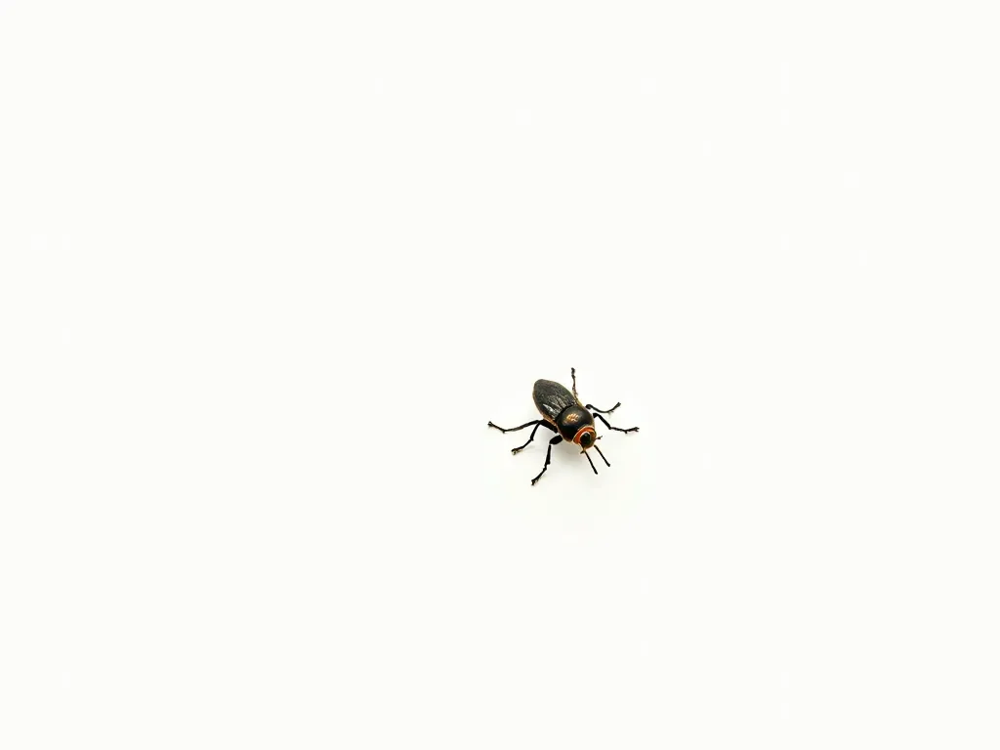

세상이 어두워지고, 가장자리가 흐릿해지면서 하얀 안개 속으로 사라져갔다. 작은 몸에 공포가 치솟았다. 그것은 종과 크기를 초월한 미지의 세계에 대한 원초적인 두려움이었다. 벌레의 더듬이가 미친 듯이 움직였고, 필사적으로 익숙한 냄새를 찾았다. 급속도로 사라져가는 현실 속에서 무언가 의지할 만한 것을 찾고 있었다.
[The world dimmed, edges blurring into a hazy fog of white. Panic surged through its minuscule body, a primal fear of the unknown that transcended species and size. The bug’s antennae twitched frantically, desperately seeking familiar scents, anything to anchor it in the rapidly fading reality.]
이것이 저 세상의 모습일까? 벌레는 생각했다. 그 작은 벌레의 뇌는 평소의 관심사인 먹이와 생존을 넘어선 개념을 이해하려고 애쓰고 있었다. 하얀색이 점점 더 커져갔다. 그것은 마치 조수처럼 거스를 수 없었고, 벌레의 모든 두려움과 희망이 투영된 빈 캔버스 같았다.
[Is this what the Great Beyond looks like? it pondered, its tiny bug-brain stretching to comprehend concepts far beyond its usual concerns of food and survival. The whiteness grew, inexorable as the tide, a blank canvas onto which the bug projected all its fears and hopes.]
기억들이 빠르게 스쳐 지나갔다. 잊혀진 꽃의 달콤한 꿀, 얇은 날개로 나는 짜릿함, 등껍질에 느껴지는 햇살의 따스함. 한때는 평범했던 각각의 순간들이 이제는 무엇과도 바꿀 수 없을 만큼 소중해 보였다. 벌레의 복합눈은 이미 흐려지고 있었지만, 떠나가는 세상의 마지막 모습을 담으려고 안간힘을 썼다.
[Memories flashed by in rapid succession: the sweet nectar of a forgotten flower, the thrill of flight on gossamer wings, the warmth of sunlight on its carapace. Each moment, once mundane, now seemed precious beyond measure. The bug’s compound eyes, already clouding, strained to capture one last image of the world it was leaving behind.]
다가오는 하얀색은 이상한 온기를 동반했다. 그것은 동시에 위안이 되면서도 두려움을 주었다. 그 온기는 벌레의 외골격에 닿았는데, 예상보다 부드러웠다. 마치 산들바람에 살랑이는 나뭇잎의 감촉 같았다. 하지만 그 부드러움 아래에는 움직일 수 없는 힘이 있었다. 그것은 굽히지 않고 절대적이었다.
[The encroaching whiteness brought with it a strange warmth, at once comforting and terrifying. It pressed against the bug’s exoskeleton, softer than expected, like the caress of a leaf in a gentle breeze. Yet beneath that softness lay an immovable force, unyielding and absolute.]
힘이 빠져나가면서 벌레의 생각은 철학적으로 변했다. 이 하얀 장막 너머에는 무엇이 있을까? 내가 강력한 포식자로 다시 태어나, 밟힐 두려움에서 벗어날 수 있을까? 아니면 더 작은 존재로 돌아와 햇빛 속에서 춤추는 먼지가 될까?
[As its strength ebbed, the bug’s thoughts turned philosophical. What lies beyond this veil of white? Will I be reborn as a mighty predator, free from the constant fear of being crushed underfoot? Or perhaps I’ll return as something even smaller, a mote of dust dancing in a sunbeam?]
압박감이 커지면서 벌레는 자신이 들어 올려지는 것을 느꼈다. 기묘한 무중력 감각이 벌레를 사로잡았고, 잠시 동안 벌레는 다시 날고 있다고 상상했다. 자신을 으스러뜨리려 했던 세상 위로 높이 날아오르는 것 같았다.
[The pressure increased, and the bug felt itself being lifted. A curious sensation of weightlessness overtook it, and for a brief moment, it imagined it was flying again, soaring high above the world that had so often threatened to squash it.]
만약 이것이 죽음이라면, 벌레는 생각에 잠겼다. 그리 나쁘지 않아. 오히려 평화롭기까지 해. 마치 파리채를 피하고 위험한 인간의 거주지를 돌아다니느라 긴 하루를 보낸 후 잠들어가는 것 같아.
[If this is death, the bug mused, it’s not so bad. Peaceful, even. Like falling asleep after a long day of avoiding flyswatters and navigating the treacherous landscape of human dwellings.]
의식이 서서히 사라지면서 벌레의 마지막 생각은 후회와 수용이 뒤섞인 혼란이었다. 더 많은 꽃을 맛봤어야 했어, 더 많은 창틀을 탐험했어야 했어, 방금 청소한 표면에 더 많은 수수께끼 같은 얼룩을 남겼어야 했는데…
[As consciousness began to slip away, the bug’s final thoughts were a jumble of regrets and acceptance. I should have tasted more flowers, explored more windowsills, left more mysterious spots on more freshly cleaned surfaces…]
그리고 갑자기 시점이 바뀌었다. 만약 벌레가 반쯤 죽지 않은 상태였다면 어지러움을 느꼈을 정도의 변화였다. 우리의 시야가 확장된다.
[And then, with a sudden shift in perspective that would have given the bug vertigo if it weren’t already half-dead, we zoom out.]
광활한 하얀색은 구겨진 티슈로 모습을 드러낸다. 그것은 엄지와 검지 사이에 잡혀 있다. 벌레에게는 산맥만큼 거대해 보였을 손이다. 그 손의 주인은 인간이다. 얼굴에 약간의 혐오감이 드러난 젊은 여성이다.
[The vast whiteness resolves into a crumpled tissue, held between thumb and forefinger of a hand that, to the bug, would have seemed as large as a mountain range. The hand belongs to a human, a young woman with a look of mild disgust on her face.]
“으, 또 하나네,” 그녀가 중얼거린다. 그녀의 목소리는 벌레의 사그라지는 심장 박동에 비하면 우레와 같은 울림이다. 그녀는 부엌 조리대에 서 있다. 원치 않는 침입자로 인해 샌드위치를 만드는 중간에 방해를 받은 것이다.
[“Ugh, another one,” she mutters, her voice a thunderous rumble in comparison to the bug’s fading heartbeat. She stands at her kitchen counter, interrupted in the middle of making a sandwich by the unwelcome intruder.]
그녀는 손목을 휙 움직여 티슈를 - 벌레와 함께 - 옆에 있는 쓰레기통에 던진다. 그 행동은 무심하고 생각 없는, 그녀의 하루 중 단순한 순간일 뿐이다. 티슈가 커피 찌꺼기와 빈 요구르트 통 사이에 자리 잡기도 전에 그녀는 이미 다시 점심 준비로 돌아가고 있다.
[With a flick of her wrist, she tosses the tissue – bug and all – into the trash can beside her. The action is casual, thoughtless, a mere blip in her day. She’s already turning back to her lunch preparations before the tissue settles among the coffee grounds and empty yogurt containers.]
그 순간, 벌레의 장엄한 마지막 여정과 인간의 평범한 행동 사이의 거대한 간극이 크게 벌어진다. 벌레의 전체 존재, 그것의 희망과 두려움, 마지막 심오한 생각들 - 이 모든 것이 단 하나의 잊혀질 해충 제거 행위로 압축된다.
[In that moment, the vast gulf between the bug’s epic final journey and the human’s mundane action yawns wide. The bug’s entire existence, its hopes and fears, its last profound thoughts – all are condensed into a single, forgettable act of pest removal.]
쓰레기통 뚜껑이 부드럽게 닫히며 벌레의 이야기를 봉인한다. 부엌은 다시 일상적인 리듬을 되찾는다: 빵을 자르는 칼 소리, 버터를 바르는 긁는 소리. 방금 일어난 작은 드라마를 전혀 모른 채 삶은 계속된다.
[The trash can lid swings shut with a soft thud, sealing away the bug’s tale. The kitchen returns to its normal rhythm: the slice of a knife through bread, the scrape of butter being spread. Life goes on, oblivious to the tiny drama that just played out.]
그리고 쓰레기통의 어둠 속에서, 티슈로 된 수의에 감싸인 채, 벌레의 여정은 끝을 맺는다 - 큰 폭발이 아닌, 샌드위치를 종이에 싸는 조용한 바스락거림과 함께.
[And in the darkness of the trash can, nestled in its tissue shroud, the bug’s journey comes to an end – not with a bang, but with the quiet rustle of a sandwich being wrapped in paper.]